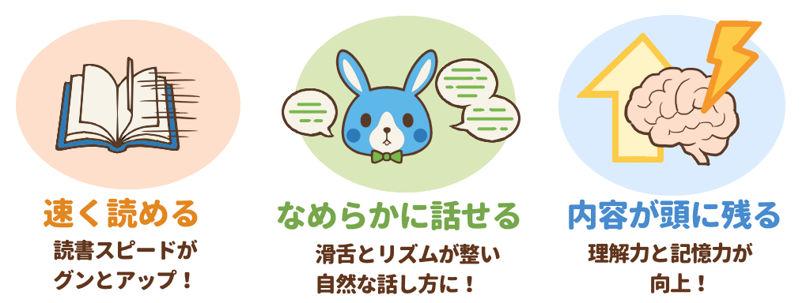
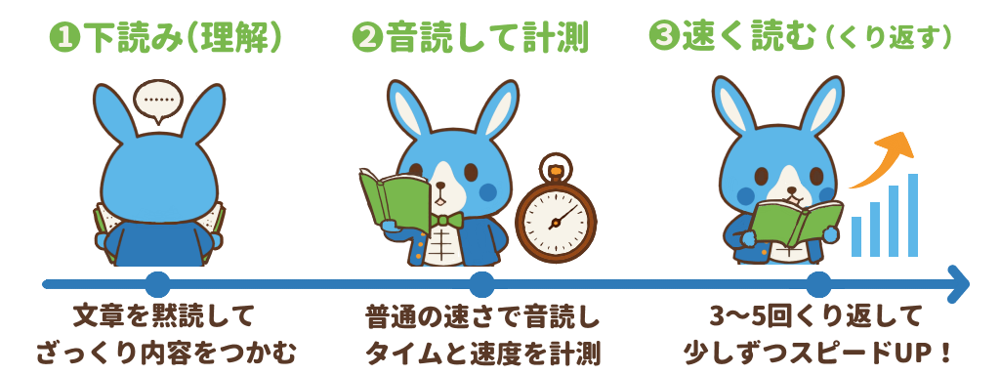
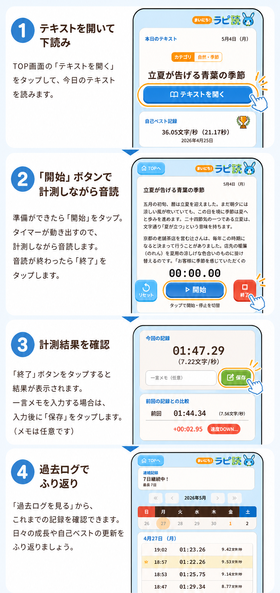
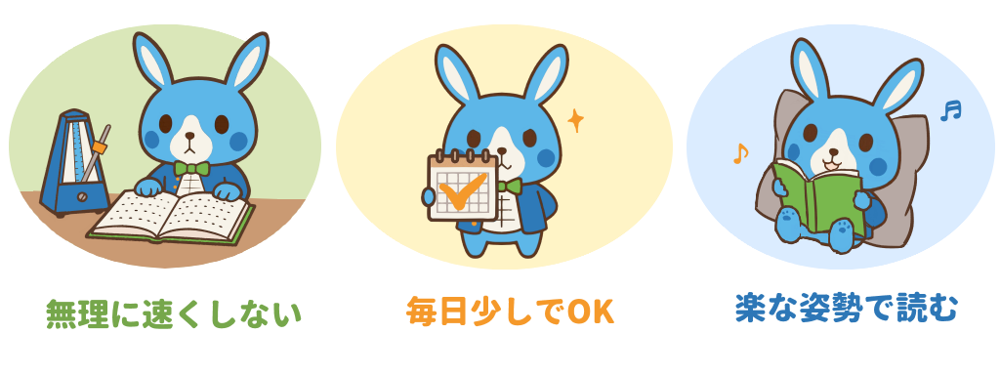

高速音読とは？
高速で音読することで読書スピード・滑舌・理解力・ワーキングメモリを総合的に鍛えるトレーニングです！
高速音読の効能

やり方はカンタン！３ステップ

「まいにち！ラピ読」の使い方

続けるための３つのコツ

- 正確さも大切です。意味が追えるスピードで読みましょう
- 1日5分でいいので、毎日継続しましょう
- 声を張り上げすぎず、リラックスして読みましょう
ご利用の前に
当サイト内の文章は、日替わりテキストも上記の高速音読の説明も、9割がAI生成ポン出しで裏取りをしていません。
書かれている情報を鵜呑みにしないでください。
当サイトに掲載された内容によって損害等が生じたとしても、運営者は一切の責任を負いかねますのでご了承ください。